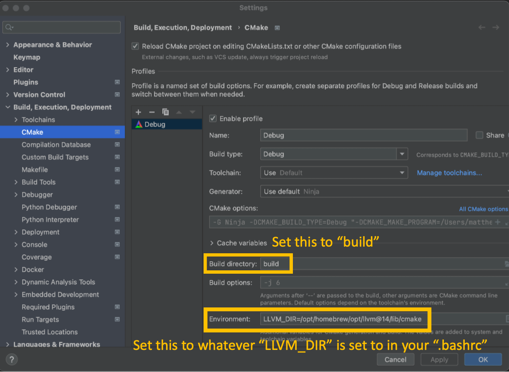

tipc
A compiler from TIP to llvm bitcode
TIP Language, Interpreter, and Analyzers
TIP is a "Tiny Imperative Programming" language developed by Anders Møller and Michael I. Schwartzbach for the Static Program Analysis lecture notes that they developed for graduate instruction at Aarhus University.
Accompanying those notes is a Scala implementation that provides a number of static analysis implementations and interpreter-based evaluators.
This project implements tipc which compiles TIP programs into LLVM bitcode. Linking that bitcode with the runtime library routines and standard libraries will produce an executable.
Dependencies
tipc is implemented in C++17 and depends on a number of tools and packages, e.g., ANTLR4, Catch2, CMake, Doxygen, loguru, Java, LLVM. To simplify dependency management the project provides a bootstrap script to install all of the required dependencies on linux ubuntu and mac platforms.
Building tipc
The project uses GitHub Actions for building and testing and CodeCov for reporting code and documentation coverage. The build-and-test.yml file provides details of this process. If you would prefer to build and test manually then read on.
After cloning this repository you can build the compiler by moving to into the top-level directory and issuing these commands:
./bin/bootstrap.sh. ~/.bashrcmkdir buildcd buildcmake ..make
The build process will download an up to date version of ANTLR4 if needed, build the C++ target for ANTLR4, and then build all of tipc including its substantial body of unit tests. This may take some time - to speed it up use multiple threads in the make command, e.g., make -j6.
You may see some warnings, e.g., CMake policy warnings, due to some of the packages we use in the project. As those projects are updated, to avoid CMake feature deprecation, these will go away.
When finished the tipc executable will be located in build/src/. You can copy it to a more convenient location if you like, but a number of scripts in the project expect it to be in this location so don't move it.
The project includes more than 300 unit tests grouped into several executables. The project also includes more than 90 system tests. These are TIP programs that have built in test oracles that check for the expected results. For convenience, there is a runtests.sh script provided in the bin directory. You can run this script to invoke the entire collection of tests. See the README in the bin directory for more information.
All of the tests should pass.
Ubuntu Linux
Our continuous integration process builds on both Ubuntu 22.04 and 20.04, so these are well-supported. We do not support other linux distributions, but we know that people in the past have ported tipc to different distributions.
Mac OS
Our continuous integration process builds on macOS 12 and macOS 13 so modern versions of macOS are well-supported. tipc builds on both Intel and Apple Silicon, i.e., Apple's M1 ARM processor.
Windows Subsystem for Linux
If you are using a Windows machine, tipc can be built in the Windows Subsystem for Linux (WSL). Here are instructions to install WSL and upgrade to WSL2. It is highly recommended to upgrade to WSL2. Once installed, you should install Ubuntu 20.04. Once finished, you can open a virtual instance of Ubuntu and follow the instructions above to build tipc.
You may recieve an error saying "No CMAKE_CXX_COMPILER could be found" when running cmake ... If this is the case, you should install g++ with the command: sudo apt-get install g++.
Using tipc
The tipc compiler has a limited set of options available through the --help flag.
By default it will accept a .tip file, parse it, perform a series of semantic analyses to determine if it is a legal TIP program, generate LLVM bitcode, and emit a .bc file which is a binary encoding of the bitcodes. You can see a human readable version of the bitcodes by running llvm-dis on the .bc file.
To produce an executable version of a TIP program, the .bc file must be linked with the bitcode for tip_rtlib.c. Running the build.sh script in the [rtlib](rtlib) directory once will create that library bitcode file.
The link step is performed using clang which will include additional libraries needed by tip_rtlib.c.
For convenience, we provide a script build.sh that will compile the tip program and perform the link step. The script can be used within this git repository, or if you define the shell variable TIPDIR to the path to the root of the repository you can run it from any location as follows:
Working with tipc
The instructions above, and the scripts described below, make it possible to develop from the command line. This gives you lots of control, but it means you will miss the benefit of modern IDEs. Below we describe how to set up the CLion IDE for use with the project.
Command line
During development you need only run build steps 1 through 5 a single time, unless you modify some CMakeLists.txt file. Just run make in the build directory to rebuild after making changes to the source.
If you do need to add a source file then you will have to edit the appropriate CMakeLists.txt file to add it. In this case, you should:
cd buildrm CMakeCache.txtcmake ..
which will regenerate the makefiles that you can then run, by typing make, to build.
Note that the tipg4 directory has a standalone ANTLR4 grammar. It's README describes how to build it in isolation and run it using the ANTLR4 jar file.
The bin directory
To facilitate development of tipc we have collected a number of helper scripts into the bin directory of the project. Among them are scripts to run the entire test bed (runtests.sh), to run a code coverage analysis (gencov.sh), and to generate the project documentation (gendocs.sh). Please see the README in the bin directory for example usages.
When rebuilding and rerunning tests you may get errors about failing to merge gcov files. This happens when gcov files linger from previous runs. To cleanup these messages, simply run the cleancov.sh script.
CLion
CLion is C++ IDE that can be used to develop and build tipc. CLion can be installed with the JetBrains suite of tools, or as a standalone tool here. Once installed, you can start a 30 day trial license or, as a student, you can get a free educational license here.
These instructions are with respect to CLion 2023.1.3, but older or new versions work similarly - though the UI may be a bit different.
If you are building for the first time with CLion, follow the first two steps of the installation process to install any needed tipc dependencies.
From the File menu select New and then Project from Version Control. You can type in the URL for this github repository and then hit the Clone button. The scripts described above assume a directory structure, but a little bit of setup will synchronize your CLion project with those assumptions and allow for easy development using both CLion and scripts, when needed.
From the CLion menu select Build, Execution, Deployment and then CMake. You want to change the Build directory to build and then define an Environment variable. When you ran the bootstrap.sh script it defined a shell variable LLVM_DIR in your .bashrc. Copy that definition into the Environment field under Cache variables. Your Settings should look as follows:

Now you can click Apply and then OK to complete the setup.
The project can now be built or rebuilt by clicking the "Build" button in the toolbar.
CLion has great debugging support as well as test coverage support for the Catch2 tests included in the project. You will rarely need to use the commandline scripts, but if you do just move to ~/CLionProjects/tipc and you can execute them there to:
- resolve
gcovmerge errors by runningcleancov.sh - run system tests with
runtests.sh - generate documentation with
gendocs.sh
Log Messages
When working on the tipc compiler, it may be helpful to enable logging messages when testing your changes on programs. We have inserted logging messages using loguru. These can be turned using the flag --verbose [x] where x is a number between 1-3. These messages get more verbose as you increase x. The first setting shows when symbols are added to the symbol table and when type constraints are generated for the type solver. The second setting shows the previous information and type constraints being unified. The third setting shows types being search for and added into the type graph. When adding to theses features, you can add logging messages by adding a line LOG_S(x) where x is an integer to describe the level of log verbosity you want. You can use the existing levels or make new levels.
main() { var r; r = {g:1}; return access(r); } access(r) { return r.f; }
main() { var r; r = alloc {g:1}; return access(r); } access(r) { return r.f; }
// recordLeak.tip foo(x,y,z){ var rec; rec = alloc {l: x, m: y, n: z}; return (*rec).m; }
main(){ var i, j, a; a = 0; i = 0; j = 0; while (1000000000 > i) { while (1000000000 > j) { a = a + foo(3,2,4); j = j + 1; } i = i + 1; } return 0; }
/path/to/tipc/bin/build.sh –do test/system/leak/recordLeak.tip ./recordLeak &; top
// recordNoLeak.tip foo(x,y,z){ var rec; rec = {l: x, m: y, n: z}; return (*rec).m; }
main(){ var i, j, a; a = 0; i = 0; j = 0; while (1000000000 > i) { while (1000000000 > j) { a = a + foo(3,2,4); j = j + 1; } i = i + 1; } return 0; } ``` We can find that this program will not create a memory leak because rec will be allocated on the stack instead of the heap as the alloc would.
Incorporating a garbage collector is a possible future extension to the runtime library.
Resources
To fully understand this project quite a bit of background is required. We collect a number of resources that we think can be helpful in that regard.
C++ Resources
If you find yourself unfamiliar with certain aspects of the C++ programming language we encourage you to explore the Back To Basics videos that have been presented at CppCon. Provided below are links to a number of these videos, as well as to other resources that are relevant to this project.
Move Semantics
Value Categories
Smart pointers
CMake Resources
Catch2 and Unit Testing Resources
LLVM Resources
To understand this code, and perhaps extend it, you will want to become familiar with the core LLVM classes. It can be difficult to absorb all of the information in this type of documentation just by reading it. A goal-directed strategy where you move back and forth between reading code and reading this documentation seems to work well for many people.
If you are familiar with the LLVM tutorial you will see its influence on this compiler which leverages idioms, strategies, and code fragments from the tutorial. The LLVM tutorials are a great starting point for understanding the APIs in the context of compiling.
There is lots of great advice about using LLVM available:
- https://www.cs.cornell.edu/~asampson/blog/llvm.html
- the LLVM Programmer's Manual is a key resource
- someone once told me to just use a search engine to find the LLVM APIs and its a standard use case for me, e.g., I don't remember where the docs are I just search for
llvm irbuilder - LLVM has some nuances that take a bit to understand. For instance, the GEP instruction, which
tipcuses quite a bit given that it emits calls through a function table.